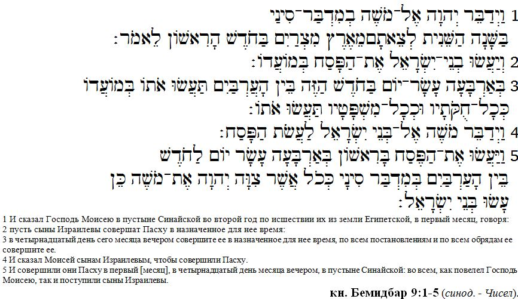

ПРЕСНЫЙ ХЛЕБ, СОШЕДШИЙ С НЕБА
Пресный хлеб с горькими травами - нехитрое меню и бездна глубины.
Одновременно с праздником Песах (синод. - Пасха) и тесно связанный с ним праздник Опресноков, название которого само по себе обнаруживает его кулинарную сущность. Интересно, правда? Бог говорит нам на протяжении всех семи дней этого праздника через самый распространенный вид еды - хлеб. И этот хлеб не есть уже просто пищевой продукт для поддержания физиологических процессов, но послание Всевышнего! ПРЕСНЫЙ ХЛЕБ, СОШЕДШИЙ С НЕБА ели израильтяне, празднуя Песах (синод. Пасху) и праздник Мацот (синод. Опресноков) в Пустыне.
рецепт и указания по выпечке мацы здесь
Первый свободный Песах.
В первый день месяца Авива второго года по исходе израильтян из Египта, Бог повелевает Моше (Моисею) праздновать Песах. Это означает, что отцы наши должны были сделать себе мацот и есть этот пресный хлеб семь дней в течение всего праздника.
Возникает вопрос, откуда можно было достать столько муки на второй год странствования по пустыне? Если не пшеничной, то хотя бы ячменной или овсяной. Крайне сложно представить себе, что они имели такие запасы зерна, что им хватило на второй год странствования для такого количества людей.
Скорее всего решением в данной ситуации был манн. И они делали мацу из манна, из хлеба, сходившего с небес. ПРЕСНЫЙ ХЛЕБ, СОШЕДШИЙ С НЕБА.
Наши мудрецы до сих пор дискутируют на тему был ли манн злаком. Мы не можем знать этого наверняка. Да и само слово «манн» в переводе с иврита означает – что это. Когда они увидели это, рассыпанное по земле, они стали задавать друг другу вопрос: «Что это?»
В любом случае мы знаем точно, что это был бесквасный хлеб. Это закон Песаха. Закваска – символ греха.
Это очень впечатляет – Бог единственный раз за всю историю человечества, накормил Свой народ – Израиля мацой из хлеба, который Сам же одождил отцам нашим в пустыне Синайской с неба. И это был первый раз, когда они праздновали Песах и ели мацу, будучи свободными людьми.
В пасхальную ночь перед выходом из земли Египетской израильтяне фактически были еще рабами фараона и пребывали на территории египетской империи.
И это был первый и единственный раз, когда они вкушали мацу с неба, будучи совершенно свободными, не рабами никому, только Всевышнему.
Мы имеем дело с очень глубокими духовными процессами, которые Всевышний запустил там вместе со священнодействием в святилище свободных и праведных Его праведностью людей.

***
Делаем мацу с Мишей Рубиным.
- Эфраим: Весь Израиль волнуется – мы подходим к Песаху и делаем последние приготовления.
Сегодня предмет нашего исследования то, что является центральным блюдом, на праздничном столе Седера. Этот праздник называется также праздником Мацот или Опресноков.
Не знаю, на сколько это реально – сделать мацу в домашних условиях (или в условиях пустыни, как некогда отцы наши), но у нас есть эксперт на этот счет – кулинар высшего класса, шеф Миша Рубин. Я бы сказал, он – поэт среди кулинаров.

Вот я хочу бросить тебе вызов, что ты скажешь, это реально сделать мацу в домашних условиях? Настоящую! Не просто поиграть и выбросить, но то, что мы сможем вкушать в седер Песах? Кашерную!
- Миша Рубин: разумеется, это вполне реально и сейчас я вам это докажу на деле.
- Эфраим: Скажи мне, а в пустыне можно ли сделать мацу? Без кастрюлей и оборудования, без газа и т.п.?
- Миша Рубин: Конечно, главное, чтобы было из чего: мука и вода, и еще раскаленный на солнце хороший плоский камень.
- Эфраим: Итак, замрите все! Сейчас мы будем делать настоящую мацу израильского изготовления в домашних условиях. Что нам для этого необходимо?
- Миша Рубин: Все что нам нужно – мука, произведенная с соблюдением всех правил (она ни на какой стадии своего изготовления не должна была соприкасаться с водой или паром, так чтобы в ней не начался процесс сквашивания). Это израильская мука. Плюс вода и начинаем замешивать. Пропорция два к одному, т.е. две части муки и одна часть воды (по весу).
Главное – хорошо замешать нашу муку. И важно соблюдать эту пропорцию, о которой я сказал.
Затем мы начинаем утрамбовывать мацу.
- Эфраим: Что значит, утрамбовывать мацу?
- Миша: значит утрамбовать тесто так, чтобы его стало возможно обрабатывать.
- Эфраим: я слышал, что производство мацы ты знаешь еще с детства, когда ты жил с родителями в Минске.
- Миша Рубин: Да, мой дед имел подряд на производство мацы. В бывшем Советском Союзе он имел большой трехэтажный дом с подвалом. В этом самом подвале в январе месяце каждого года начинали печь мацу на весь город. Тогда было тяжелое время, продукты были по карточкам. И люди приносили свою муку.
В подряде была женщина, она сидела только на замесе теста. Также был человек, работавший на трамбовке. Была также специальная машина с двумя валиками и человек при ней, который крутил эти валики (он назывался машинистом). Еще один человек направлял тесто между валиками и таким образом тесто раскатывалось.
Правда все это было запрещено законом. И милиция, которая тоже любила покушать, приходила с инспекцией, не печатаем ли мы газету в нашем подвале.
- Эфраим: я не понял, закон запрещал изготовление хлеба?
- Миша Рубин: была запрещена маца.
- Эфраим: в какое это было время?
- Миша Рубин: мы начали в 1968г.
- Эфраим: так я не понял, в бывшем Сов. Союзе было запрещено печь хлеб?
- Миша Рубин: Дело в том, что это был частный бизнес. Необходим он был потому, что государство не занималось производством мацы, так как это связано с реглигией. А государство было противником всякой религии.
- Эфраим: Так они были и против того, и против другого. Государство видело в твоем дедушке буржуя (частного предпринимателя). И потом, оно видело в нем религиозного еврейского буржуя, можно сказать – жида?
- Миша Рубин: Правильно. Мой дед тайным образом делал эту мацу. Проблема была в том, что КГБ и милиция хотели кушать.
- Эфраим: Так у них тоже был свой бизнес?
- Миша Рубин: они работали «крышей». Они приходили, получали свою «выпивку-шмыпевку» и проблема решалась.
- Эфраим: то есть, каждый делал свое дело?
- Миша Рубин: на этом люди неплохо зарабатывали. Были люди, которые собирали с людей муку, а потом разносили готовый продукт.
- Эфраим: скажи, когда ты помогал своему деду в этом бизнесе, какая была твоя функция?
- Миша Рубин: вешать сырую мацу на палку, потом ее вкладывали в печь. Но это надо было делать очень быстро. Я только навешивал мацу, а другой был ответственен за выпекание. Этот человек брал у меня эту палку с мацой (шесть штук на одной палке) и закладывал в печь. И он же деревянной лопаткой вынимал из печи уже готовую мацу.
Печь готовили и разжигали с ночи. Потом угли сгребали в сторону и целый день печь была способна производить мацу.
Этот дедовский подряд был очень известен в городе. Приезжали за мацой со всей округи и деревень. Мы делали килограмм сто – сто пятьдесят в день.
Все делалось вручную. Хотя использовалась машина, она приводилась в движения вручную – был человек, который крутил здоровенные валики и пресс.
Обычно, наши евреи любили очень тонкую мацу, чтобы они хрустела. Делали также и яичную.
Было время, когда милиция не давал нам покоя. Однажды приходит человек от них и спрашивает: «Ну что, вы тут печатаете газету?» - они хотели деньги. «Нет», - отвечали мы, - «мы просто делаем мацу». «А кровь вы туда берете христианскую?»
- Эфраим: имеется в виду кровь христианских младенцев?
- Миша Рубин: «что за глупость», - мы им говорим, - «какая кровь?» Они считали, что еврейская маца непременно связана с христианской кровью...
У нас в подряде было так: человек, который стоит у печки, человек, который вешает мацу на палку, тот, кто закладывает мацу в печь, тот, кто замешивает тесто, трамбовщик, тот, что крутит колесо валиков, тот что направляет тесто в машине и последний – тот, кто принимает готовую мацу. Всего восемь человек.
Окей. Теперь делаем дырочки, чтобы тесто не поднималось и будем печь мацу.
- Эфраим: и где этот ваш бизнес функционировал, на частной квартире?
- Миша Рубин: да, в подвале. Он был абсолютно кашерным. Приходил специальный проверяющий - машгиах кашрут (член еврейской общины, который следит за кашерностью всего производства). Дед мой имел хорошее имя в городе, ему доверяли. И машгиах подтверждал, что все абсолютно кашерно. В Минске было много верующих людей и поэтому все должно было сделано по закону.
автор: Эфраим Калиш /TORAART/